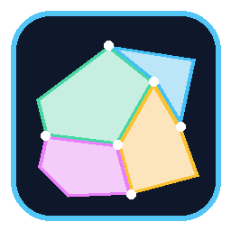

GML Reader
Strona główna
Pobieranie
Instrukcja obsługi
Kontakt
404
Nie znaleziono strony
Strona, której szukasz, nie istnieje, została usunięta lub jej adres został zmieniony.
Powrót do strony głównej